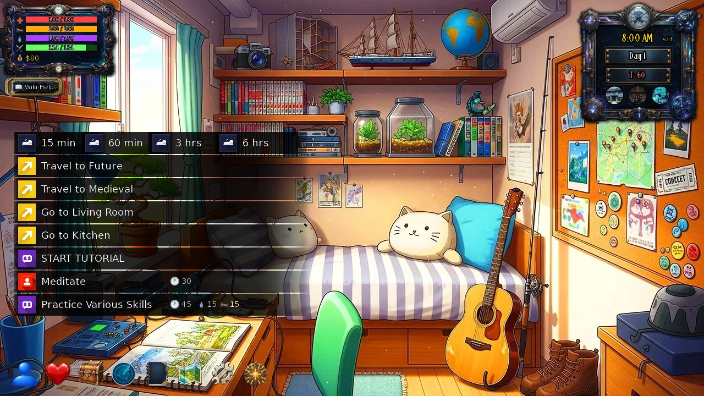
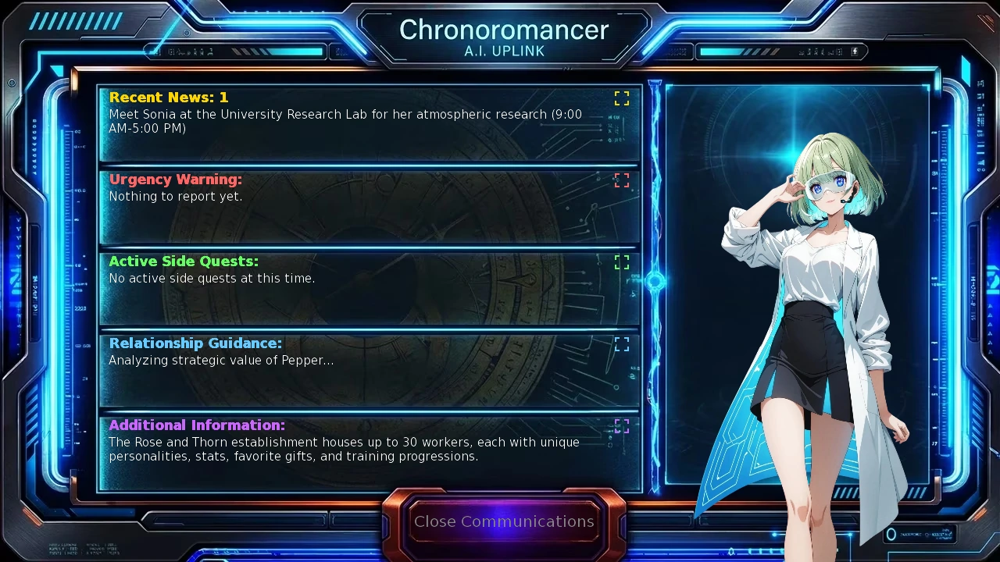
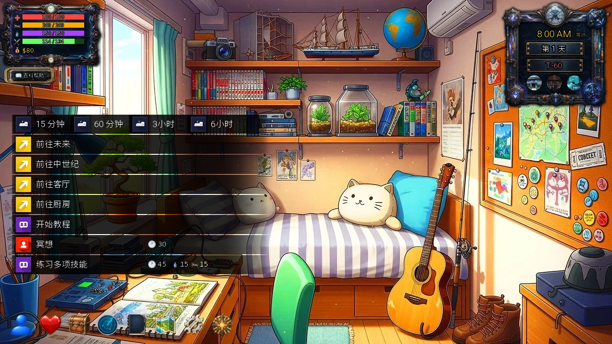
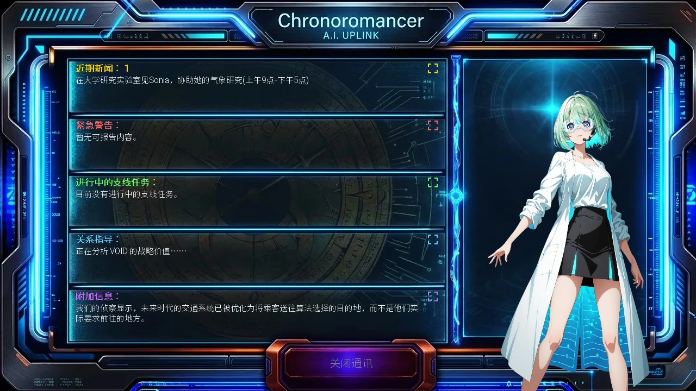

Select a screenshot to enlarge it. Screens show example inventories and progress.
A short checklist for your first session
A concise companion to Getting Started. The original community quickstart was written by DanCave; thank you for helping new players. This edition follows the current interface and links to detailed guides when you need them.
1. Create, then start the tutorial
- Choose a proficiency before allocating points: changing it resets your allocation.
- Enter a non-empty name and spend all 20 points, then continue.
- In the bedroom choose START TUTORIAL. Find the bottom toolbar and make a first manual save through the cog.

2. Find the next objective
For the first story visit, find Sonia at University Research Lab between 09:00 and 17:00. After that, open Communications for the updated destination. Use Notebook page 10 for the Quest Log, and the golden star for Tutorial Quests. They are three different progress tools.

3. Recover before you are exhausted
Watch Health, Energy, Calm and Satiation. Low condition can increase action time. Eat Food from Inventory, and use bedroom recovery as needed. Ingredient stock is used in recipes; it is not ready-to-eat Food. Check the time after recovery before visiting someone with opening hours.
4. Work, claim and save
- Try an available job: Stock Shelves needs Stamina 10; Library Assistant needs Intelligence 10. Read its current costs and pay.
- Claim completed Tutorial Quests; do not assume every reward is a Crystal.
- Keep multiple manual saves for important progress. F 4 updates one quick-save position; F 5 loads it.
- If stuck, check the exact room, opening hours, earlier events and item requirements before repeatedly spending time.
Continue at your own pace
First Days and Practical Planning · Frequently Asked Questions · Find a character by portrait · Crystals and Doomsday
第一次游玩的简明清单
本页是新手入门的简明配套清单。原社区快速入门指南由DanCave撰写，感谢其对新玩家的帮助；此版按当前界面整理，需要细节时可继续阅读对应指南。
1．创建角色，开始教程
- 先选专长，再分配属性点；切换专长会重置分配。
- 填写姓名，花完20点，再选择继续。
- 进入卧室后选择「开始教程」。认识底部工具栏，并从齿轮按钮建立第一份手动存档。

2．找当前目标
首次主线拜访是在09:00–17:00到大学研究实验室找Sonia。此后打开通信，按更新后的目的地继续。笔记第10页是任务日志，金色星星是教程任务；三者用途不同。

3．耗尽之前先恢复
留意生命、精力、镇定与饱腹感；状态过低可能增加行动耗时。从库存主动吃食物，按需要回卧室恢复。食材用于配方，不是可直接食用的食物库存。恢复后重新看时间，再拜访有开放时段的人物。
4．工作、领奖、存档
- 尝试已满足条件的工作：补货上架要求耐力10，图书馆助理要求智力10；执行前先看当前消耗与报酬。
- 完成教程任务后回来领奖；并非所有奖励都是水晶。
- 重要进度保留多份手动存档。F4更新同一个快速存档位置，F5读取它。
- 卡住时，先核对具体房间、开放时间、前置事件与物品要求，不要只反复消耗时间。
按自己的节奏继续
Adapted and updated from the community Chronoromancer Wiki. Community source and history · CC BY-SA 4.0. Game images © Chronoromancer Studio.